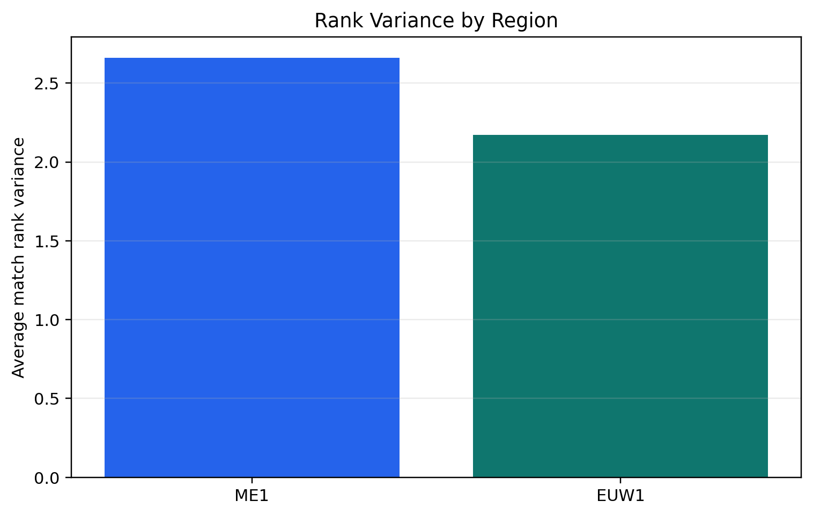
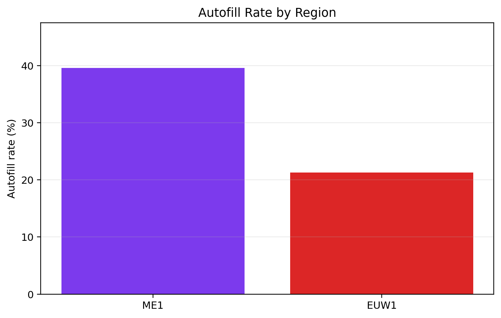
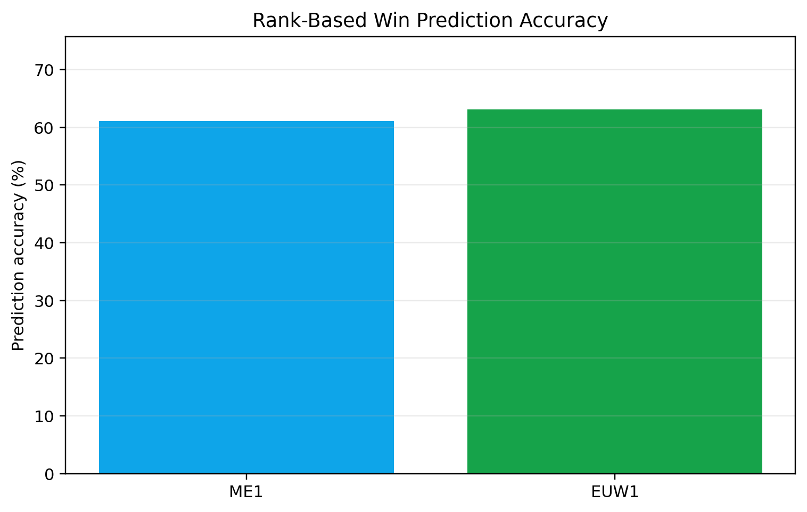

Project Case Study
AI & Data Science
League of Legends matchmaking fairness analysis across ME1 and EUW1.
A data-driven comparison of ranked match balance, autofill rates, rank variance, and prediction reliability using archived Riot match data.
Snapshot
Archived dataset
to 2026-02-17 UTC sample window
Observed snapshot: 2026-01-20 to 2026-02-17 UTC.
Problem
Why this project matters
Competitive matchmaking should create games where teams have similar skill, role stability, and fair win chances. This project investigates whether matchmaking quality differs between the ME1 and EUW1 regions.
Dataset
What was analyzed
Archived snapshot
- Regions: ME1 and EUW1
- Match count: 104,315 ME1 and 129,888 EUW1
- Outputs stored in
outputs_publication_analysis/
Database structure
matches(match_id, data)players(puuid, crawled, tier, rank, lp)- Parsed with a reproducible Python pipeline
Key Findings
Results from the snapshot
Rank variance
In this snapshot, average match rank variance suggests ME1 was less balanced than EUW1.
2.66 ME1 vs 2.17 EUW1
Autofill rate
Role stability differs substantially between regions, indicating a heavier autofill burden in ME1.
39.58% ME1 vs 21.31% EUW1
Prediction accuracy
Rank-based win prediction remains useful, but the snapshot shows only moderate reliability in both regions.
61.05% ME1 vs 63.09% EUW1
Rank-vs-win correlation
The relationship is weak in both regions, which indicates that rank alone is not a strong outcome signal.
r = 0.0259 ME1 and r = -0.0205 EUW1
Smurf-gap estimate
In unfair matches, the snapshot suggests a higher level gap between balanced and unbalanced games in EUW1 than ME1.
13.2 levels ME1 vs 18.6 levels EUW1
Methodology
How the pipeline works
- Collect or load regional match data.
- Parse match and player records.
- Compute rank spread, autofill, and balance indicators.
- Compare ME1 and EUW1.
- Export tables and figures.
- Write conclusions from the snapshot.
Tech Stack
Tools used
Python
Pandas
SQLite
Riot API
Data Cleaning
Exploratory Data Analysis
Statistical Comparison
Reproducible Scripts
GitHub Pages
Reproducibility
How to rerun the project
Runtime settings are read from environment variables so the same pipeline can be pointed at a new season or a fresh export without rewriting code.
RIOT_API_KEY
LEAGUE_STATS_DATA_ROOT
LEAGUE_STATS_OUTPUT_ROOT
LEAGUE_STATS_SEASON_LABEL
LEAGUE_STATS_START_DATE
LEAGUE_STATS_END_DATEImportant note
No private Riot API key should be committed.
The repository includes a local `.env.example` template for safe setup.
Results
Repository outputs
{kind=link}

Rank variance by region{kind=link}

Autofill rate by region{kind=link}

Prediction accuracy by regionMore figures and CSV outputs are available in the repository outputs folder.
Summary
Recruiter-friendly summary
This project demonstrates applied data analysis, fairness evaluation, regional comparison, reproducible Python scripting, and clear communication of results.